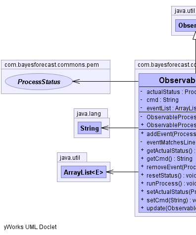
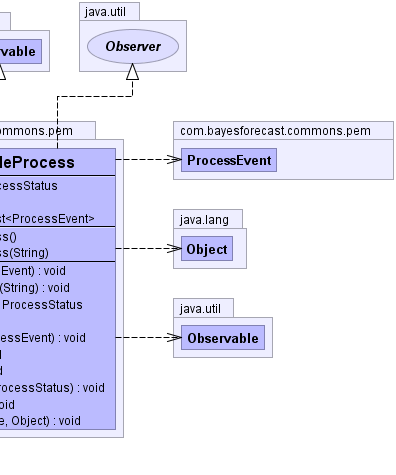

public class ObservableProcess
extends java.util.Observable
implements java.util.Observer
Observable,
Observer,
ProcessEvent,
ProcessStatus|  |  |
| Modifier and Type | Field and Description |
|---|---|
private ProcessStatus |
actualStatus
Represents the status of the process at the moment of the observation.
|
private java.lang.String |
cmd
Contains the command associated with the process.
|
private java.util.ArrayList<ProcessEvent> |
eventList
Contains a list of events that can be launched during the execution of the process whether
a line returned by the standard output matches a specific regular expression which activates it.
|
| Modifier | Constructor and Description |
|---|---|
private |
ObservableProcess()
Basic constructor.
|
|
ObservableProcess(java.lang.String cmd)
Constructor of the process defined by the command passed by argument.
|
| Modifier and Type | Method and Description |
|---|---|
void |
addEvent(ProcessEvent e)
Adds a new event to the process that could be activated during the process execution.
|
private void |
eventMatchesLine(java.lang.String line)
Passes the line given by argument through every event registered in the process so that it
activates when the line matches it's regular expression.
|
ProcessStatus |
getActualStatus()
Obtains the current status of the process.
|
java.lang.String |
getCmd()
Obtains the command associated to the process.
|
void |
removeEvent(ProcessEvent e)
If it has been inserted before, removes the event passed by argument from the list of events that
the process manages.
|
void |
resetStatus()
Establishes the status of the process to an Initial Status.
|
void |
runProcess()
Launches the process and analyzes line by line its output to check the events.
|
void |
setActualStatus(ProcessStatus actualStatus)
Sets the current status of the process to the one given by argument.
|
void |
setCmd(java.lang.String cmd)
Changes the command associated to the process with the one given through the argument.
|
void |
update(java.util.Observable arg0,
java.lang.Object arg1) |
private java.lang.String cmd
private ProcessStatus actualStatus
private java.util.ArrayList<ProcessEvent> eventList
ProcessEventprivate ObservableProcess()
public ObservableProcess(java.lang.String cmd)
cmd - Command associated to the process.public java.lang.String getCmd()
public void setCmd(java.lang.String cmd)
cmd - New command associated to the process.public void addEvent(ProcessEvent e)
e - The event to be added.ProcessEventpublic void removeEvent(ProcessEvent e)
e - The event to be removedProcessEventpublic ProcessStatus getActualStatus()
public void setActualStatus(ProcessStatus actualStatus)
actualStatus - The new status of the process.public void resetStatus()
public void update(java.util.Observable arg0,
java.lang.Object arg1)
update in interface java.util.Observerpublic void runProcess()
private void eventMatchesLine(java.lang.String line)
line - Line to be checked.